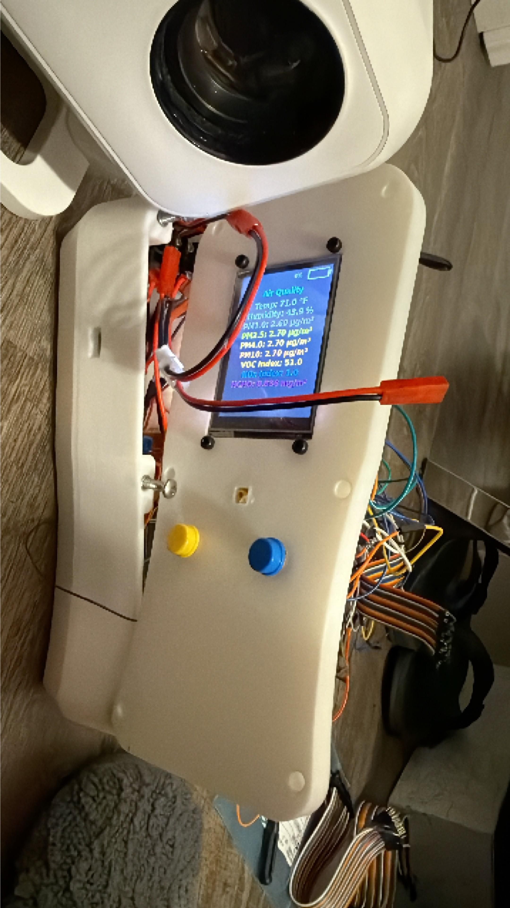
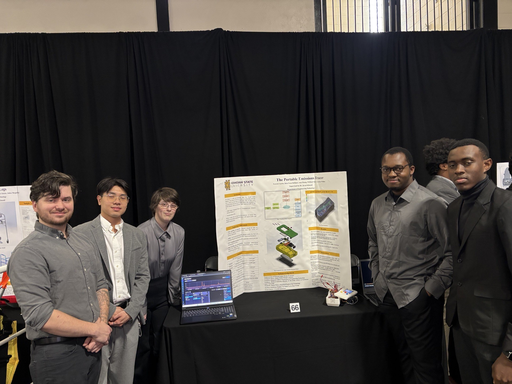
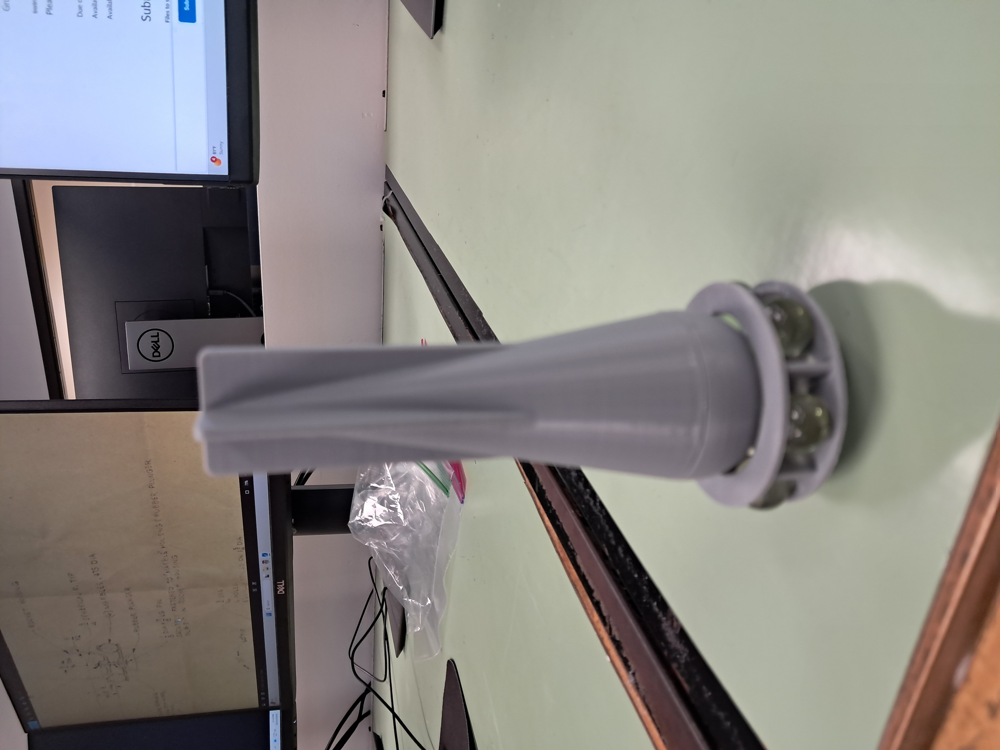
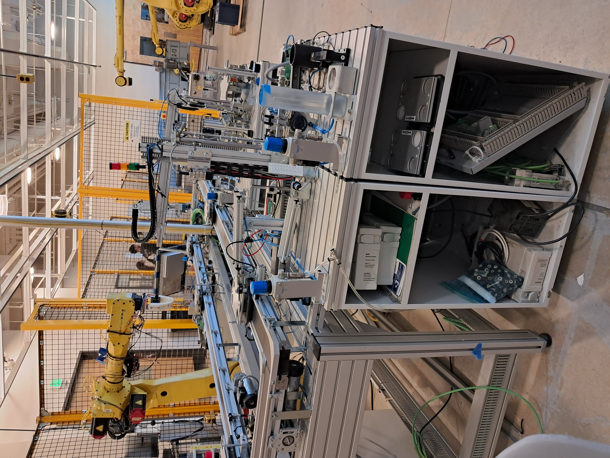

PROJECTS
Here are some of the projects I have worked on, showcasing my skills and expertise in mechanical and robotic engineering. Each project represents a unique challenge and opportunity for me to apply my knowledge and creativity to develop innovative solutions. I am proud of the work I have done and excited to share it with you.
Project 1: Smart 3D Printer gas monitor
This project involved the development of a handheld monitor for detecting critical and hazardous gases in 3D printing environments. While the project was challenging, it provided valuable assets that can be useful for students, and individual running small businesses. I was basically in charge of the design and flow simulation of this project to ensure a proper ventilation, and strength of the prototype in any circumstances and temperature changes. It was a great-experience trying to find the right balance between cost and performance, and I am proud of the final product we were able to create.

>


Project 2: Appolo Research project
This project explore the use of an outdated drawing from the appolo project from Paul Radow a lead design engineer at the time and reverse engineering to discover the use of the prototype in the Appolo project. While its role remains mysterious. i was able to reverse engineer a drawing dated from 1970 and 3d print it.





project 3: Enclosure design and manufacturing
This project was a requested project from professor to improve our abilities in geometry dimensioning and tolerancing and support them in their research program. The expected product was to find a cost effective enclosure that combines both strength, and lightweight This experience granted me the ability in drawing making, sheet metal design using Solidworks 2024.


project 4: Conveyor Monitoring using PLC programming
PLC programming from Allen Bradley using the updated Rockwell software the goal was to sharpen our PLC background for industrial motor control and automation. this project included a system startup, normal operation and system shutdown by monitoring led, timers, pushbuttons, convetor motor, gates and optical detectors.


Project 5: Tecnomatix and transparent object detection
This master project combines my abilities in undergoing research on a challenging topic and improve the existing solution my goal was to use a nearly infrared light and a deep learning model combine with open cv from python to detect transparent medical object in a pharmaceutical industry in order to prevent contamination and investigate misgrasping of the end effector

